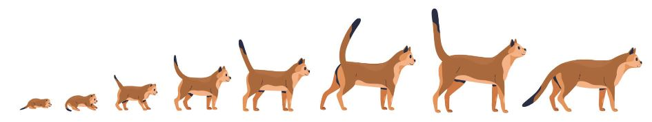

Como educar a un gato
Gatos especiales – gatos más antiguos del mundo
Cuál es el gato más viejo del mundo? ¿Y qué edad tiene?

Hay un dicho muy conocido que dice que los gatos tienen nueve vidas. Es una teoría atrevida que probablemente tenga algo de cierto en el hecho de que los gatos son muy inteligentes y adaptables. En general, es imposible decir cuántos años vivirá un gato. Depende de muchos factores diferentes. Sin embargo, la vida de un gato suele ser más corta que la de su dueño. Para calcularlo, se suele considerar que un año felino corresponde a siete años humanos. Hoy en día, se supone que un año gatuno corresponde a 15 años humanos. Así que un gato de 20 años tiene 96 años según nuestro calendario humano. Por supuesto, hay excepciones, con gatos que han alcanzado edades aún más increíbles: ¡los ancianos por excelencia!